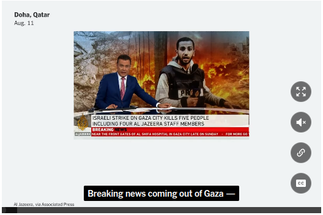
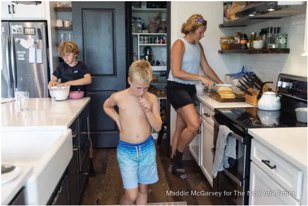
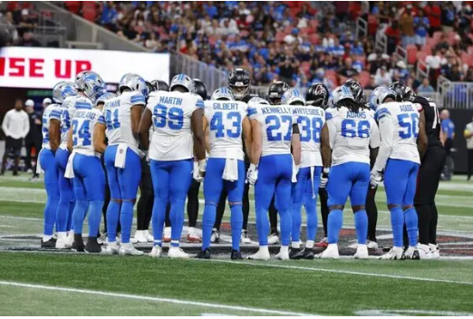
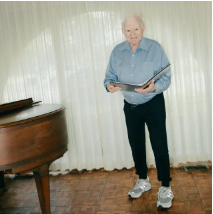
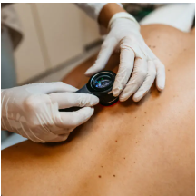

In Unusual Move, U.S. Government to Take Cut of Companies'Chips sold to China
The unorthodox agreement for Nvidia and AMD to pay the U.S. 15 percent would essentially make the federal government a partner in their business in China.
5 MIN READ
Monday, August 11, 2025
Today's Paper
The unorthodox agreement for Nvidia and AMD to pay the U.S. 15 percent would essentially make the federal government a partner in their business in China.
5 MIN READ
Is the Chip Deal a Tax, or a Payoff?
7 MIN READ
4 MIN READ
Volodymyr Zelensky fears that the Kremlin will try to convince President Trump at the U.S.-Russia talks that Ukrain, not Russia, is the obstacle to peace.
4 MIN READ
The Isreali government said last Week that it wanted to capture Gaza City, but how and when it will proceed has yet to be decided.
2 MIN READ
Anas al-Sharif, a well known correspondent, was among those killed. Isreal said it targeted Mr. al-Sharif, claiming he worked for Hamas, which he had denied.
4 MIN READ

Shawn Paik
The Times offers several ways to send important information confidentially
Many in the capital worry that the secular freedoms they enjoyed under the Assad regime are under threat from the new Islamist government.
6 MIN READ
Nanna Heitmann for The New York Times
The siblings"really enjoyed make-believe"as kids. Now they are performing Shakespeare under the stars at the Delacorte Theater in Central Park.
6 MIN READ
Amir Hamja for The New York Times
6 MIN READ
6 MIN READ
4 MIN READ
Yes, it still makes plenty of mistakes, but it has become part of the job for many.
7 MIN READ
May Mailman is credited as an aniating force behind a strategy that has intimidated institutions and undercut years of medical and scientific research.
In a neighborhood that appeals to people from both the right and left,residents strive for a finely tuned state of political harmony.
12 MIN READ
12 MIN READ

5 MIN READ
2 MIN READ
Performers are delighting crowds at the Edingburgh Festival Fringe, using a mixture of dish soap, water and lube-and occasional acrobatics.
4 MIN READ
12 MIN READ
Robert Ormerod for The New York Times
For English-speakers in Quebec City,a former jail-turned-library is a sanctuary in a metropolis where the domination of French is enshrined in law.
5 MIN READ
Nasuna Stuart-Ulin for The New York Times
When Helene disconnected a part of North Carolina for weeks, a writer had to relearn old ways of knowing what was happening-and what wasn't.
23 MIN READ
Photo illustrated by The New York Times. Source photograph by Erin Brethauer.
ADVERTISMENT
Rescue efforts were continuing after the 6.1-magnitude temblor struck in a region that is crisscrossed by fault lines.
1 MIN READ
The company said the service, synonymous with early days of internet, will be discontinued on Sept.30.
2 MIN
Sports coverage
When safety Morice Norris left the game in an ambulance, the Falcons and Lions took matters into their own hands.
A staggering N.I.L. deal generated headlines, but more than money fueled the Red Raiders' rise.
A sports that boast itself as as the national pastime, one that is so rich in history,can sometimes be suffocated by it, a columnist for The Athletic writes.

Todd Kirkland/Getty Images
ADVERTISMENT

Lyndon French for The New York Times
4 MIN READ

Getty Images
4 MIN READ
Getty Images
4 MIN READ
Photo Illustration by Chelsie Craig
Getty Images
3 MIN READ
Jessica Assaf wrote down the qualities of her ideal partner. At Burning Man, she had a revelation: She had found what she wanted in Dean Prince.
7 MIN READ
Annie McElwain
Podcast and narrated articles
What C.E.O.s Really Think About Trump's Tariffs